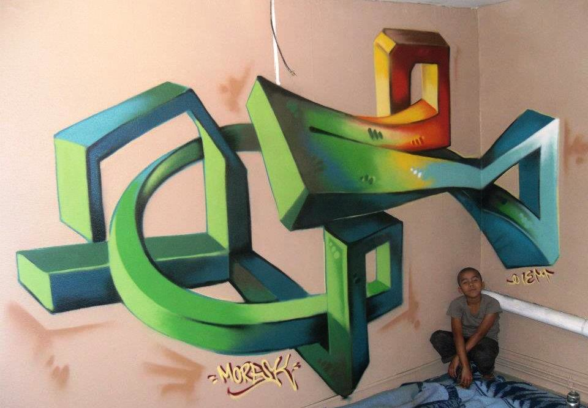
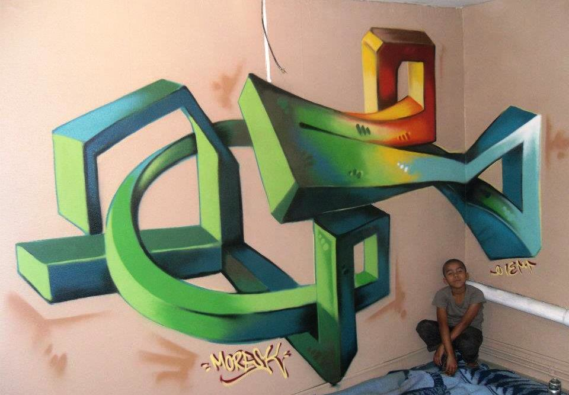
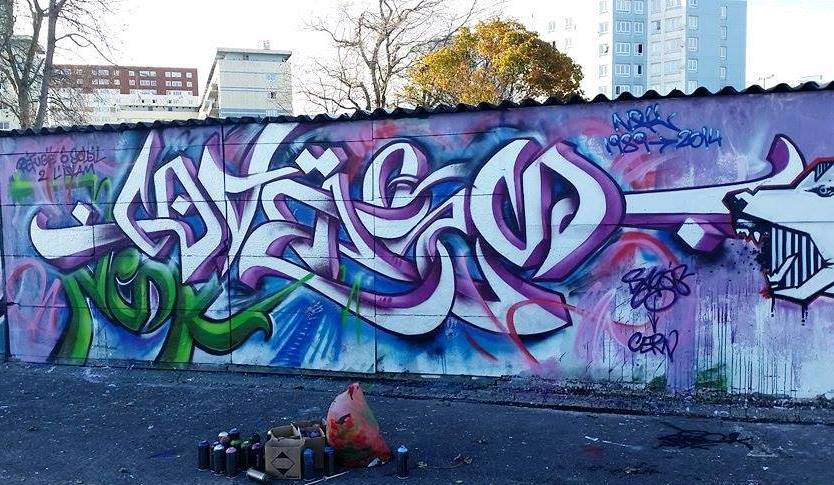
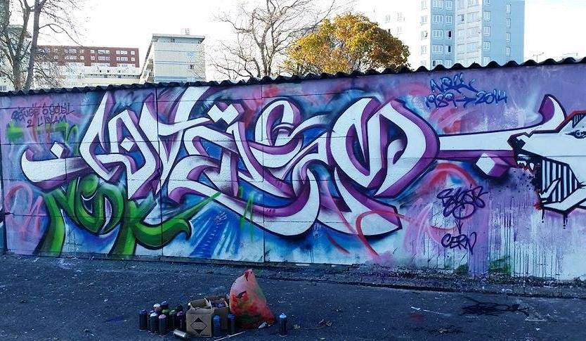

À propos
Né en 1974, Sagés est un artiste français domicilié au Sénégal, qui
peint depuis son adolescence. D’abord affilié à la mouvance graffiti,
dont il fut l’un des pionniers dans le Nord de la France, il s’émancipe
rapidement des codes du street art pour développer un style plus
personnel. Son univers mêle influences urbaines et références
culturelles variées, notamment celles de l’Afrique, qu’il chérit
particulièrement. Il a participé à de nombreux festivals d’art urbain et
exposé ses toiles à plusieurs occasions.
Style 1
Les œuvres de Sagés proposent un voyage fascinant dans l’univers de
l’abstraction géométrique et de l’art cosmique. Elles allient à la fois
la rigueur de la symétrie et l’explosion de la couleur, créant un
langage visuel qui interpelle à la fois la raison et l’imaginaire. Le
dialogue entre chaos et ordre : Ces œuvres reposent sur une tension
fertile entre deux forces opposées : Le chaos, incarné par
l’arrière-plan diffus, presque aléatoire, où les couleurs se mélangent
en tourbillons et éclats. L’ordre, exprimé par la régularité
géométrique, la symétrie parfaite des formes qui semblent surgir de ce
chaos pour y imposer une structure. Ce dialogue entre désordre et
organisation fait écho à la manière dont l’humanité tente de trouver du
sens et de l’harmonie dans un monde parfois imprévisible. En définitive,
ces œuvres peuvent être perçues comme des fenêtres sur l’infini. Elles
traduisent une vision cosmique, une recherche d’unité entre le
microcosme (la géométrie intime des formes) et le macrocosme
(l’immensité de l’espace). Elles rappellent que l’art peut être un pont
entre le rationnel et le spirituel, entre la science des formes et la
poésie des couleurs.
Style 2
Sagés propose un univers où la rue dialogue avec le fantastique, où le
chaos devient harmonie. Les lignes nerveuses, les éclats d’encre, les
contrastes marqués donnent une impression de mouvement permanent, comme
si les images refusaient de rester figées. On y retrouve la brutalité de
la ville, la vitesse, la débrouillardise, mais aussi une poésie
viscérale, presque sauvage. L’artiste mêle des références populaires (le
taxi, les graffitis, les symboles politiques ou culturels) à des
représentations organiques (tentacules, squelettes, ailes), créant des
fusions improbables qui interrogent le spectateur : qu’est-ce qui est
vivant, qu’est-ce qui est mécanique, qu’est-ce qui est libre ? Au-delà
de la virtuosité technique, ce style dégage une énergie contestataire et
spirituelle. Il traduit la tension entre survie et créativité, entre
chaos et beauté, entre désordre urbain et aspiration à l’envol. En
somme, ses œuvres sont des manifestes graphiques : elles ne cherchent
pas à rassurer, mais à réveiller.


 



 
